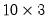

@vec Vectorize (stack columns of) matrix. Syntax: @vec(m) m: matrix, sym Return: vector Creates a vector from the columns of the given matrix stacked one on top of each other. The vector will have the same number of elements as the source matrix. Examples matrix m1 = @mrnd(10, 3) vector v1 = @vec(m1) creates a  matrix of uniform random numbers M1 and stacks it into a 30 element vector V1. Cross-references See also @unvec, @unvech, and @vech.